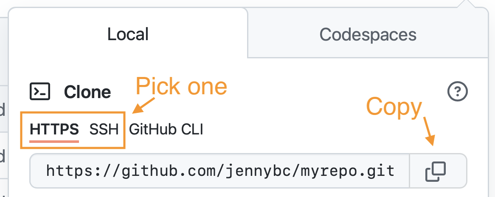

Part 1.2: File Organization, Version Control, and Workflow
BIOS 967: Intro to R for Biologists
Dai Shizuka
updated 08/24/23
Note: You can get a lot of this information from Hadley Wickham’s “R for Data Science” book, Chapter 8: here, and the https://happygitwithr.com/ tutorials.
2. Using Rstudio Projects and organizing your files.
Rstudio projects facilitate a important “best practice” for developing code to facilitate your research, which is to make sure that for each project, create one folder that contains all of your data, scripts, outputs (e.g., plots) and other assets.
Additionally, I highly recommend that this “project directory” folder includes a subfolder called “data” that contain all of the data files, and “figures” (or some other name) folder that will contain all of the output plots, etc.
Setting up a project directory in this way allows you to keep everything organized and up to date, and it also helps with collaborations or sharing code, because it is easy to follow where things are. It is also nice for your “future self”–if you come back to a project after some time, it is easy to pick up where you left off without wondering where you left all of the relevant files.
Finally, the more important reason to set up an Rstudio project folder is that it will allow anyone to run the code you are developing in this folder because you all of your pathnames will be “relative” to the parent directory. By using “relative path” names in your code, it becomes much more reproducible and enables collaboration.
2.1. Setting up a new Rstudio project folder
Here is what I recommend for every project you start:
- Create a folder that will be your main “project folder”.
Try this out be creating a “trial” Folder somewhere in your computer.
Next, in R Studio, click on “File” > “New Project”
Click on “Existing Directory”, click “Browse” and select the “trial” Folder you created, then click “Create Project”
Now, you will see that there is a new “trial.rproj” file in your folder.
Open that .rproj file. This will open up a new RStudio window.
Now, whenever you create any file within this R Project, the files will automatically go into this folder. Also, if you want to import any files, you can just put in the file name instead of the whole path.
Try this out by saving a pre-loaded data frame as a spreadsheet file: Here, we’ll save the “iris” data set as a .csv file.
write.csv(iris, file="iris.csv")You see this new .csv file in your project folder.
3. Version control and collaboration using Git and GitHub 
Version control is a system by which you can keep track of changes to collaborative projects. One common example is Google Doc, which is an online document that multiple people can collaborate on. Importantly, Google Doc automatically saves versions of the document when changes are made, and users can revert back to earlier versions if they want.
Git is an open-source software that facilitates version control of files in repositories (which is another way of saying project directory).
GitHub is a service that facilitates Git-based projects. There are other popular similar services, such as Bitbucket and GitLab
3.1. Why are we using version control and GitHub
For practical purposes, this system will help me teach this class. If we do this right, it will help tremendously with the process of troubleshooting your code when we get to independent projects! It will allow me to access your projects on my computer, help make edits, and keep track of those edits.
The larger reason is that this will help you with your research. You will no doubt be using R (and perhaps other coding languages) for your research, and this enables a workflow that is portable from one computer/collaborator to another.
It will expand the scope of your work. Once you make a project repository, you can make it private or public. If you make a public repository, then you can share it with colleagues. Likewise, you can fork any other public repository–this is increasingly the way people disseminate new software or packages for cutting-edge analysis techniques.
You’ll impress people!
3.2. Set up a GitHub repository for this course, and set it up to talk to Rstudio
Here, we are following the directions on Chapter 6-13 of the Happy git with R website, here
3.2.1. Create a GitHub account
Go to github.com and sign up for an account.
3.2.2 Check if you have Git installed
The simplest way to do this is use the Shell on your computer. You have this already, whether or not you know it.
- On a Mac, search for “Terminal” on your computer. You can either look in the Applications folder or search for “Terminal.app” in Spotlight
- On a Windows computer, search for “Shell”
Either way, the Shell/Terminal window often looks something like this, with a black background and courier or monaco font.k
Then type in this window:
which gitIf it responds with something like:
## /usr/bin/gitthen it means you have Git installed already.
Now check the version:
git --versionIt should give you the version number.
3.2.3. Install a Git Client
There are many Git clients out there. Personally, I just use GitHub Desktop 
Git Clients provide a graphical user interface (GUI) that facilitates the processes of committing, pushing, pulling and other tasks. It also allows you to see the history of changes to your repository.
3.2.4. Create a Personal Access Token on GitHub
When linking a GitHub repository with Rstudio, you will need to be able to authenticate your connection. To increase security, GitHub no longer supports access using a simple password. Instead, it requires you to authenticate using a personal access token. You need to generate a token, and then you will use this later to connect Rstudio with your repository.
- Go to https://github.com/settings/tokens and click “Generate token”. Your settings should include “repo”, “user”, “workflow”, and I would set the expiration date to be at least the end of the semester (e.g., December 15th, 2023). SAVE THIS TOKEN.
(The longer way to go is to sign in to github, Click on your avatar on the top-right corner, then go to Settings > Developer settings (at the very bottom) > Personal access tokens > Tokens (classic))
3.2.5. Make a repository (“repo”) on GitHub.
Log into github, click on “Repositories”, then click the big green “New” button
- Repository template: No template
- Repository name:
BIOS967_YourLastName_YourFirstNameplease follow this template for naming your repository–this allows me to easily find your repo on my end - Initialize this repository with: Add a README file.
Click on “Create Repository”
Now, click on the green button that says “<>Code”
Copy the clone URL to your clipboard. Use the HTTPS URL.

3.2.6. Clone the GitHub repository to your computer via RStudio
In RStudio, start a new project: File > New Project > Version Control > Git. In “Repository URL”, paste the URL of your new GitHub repository.
Determine where your project will be saved locally. Be intentional. I have all of my GitHub repositories saved in my Documents folder in a subfolder called “GitHub”.
Check “Open in new session”
Click “Create Project”.